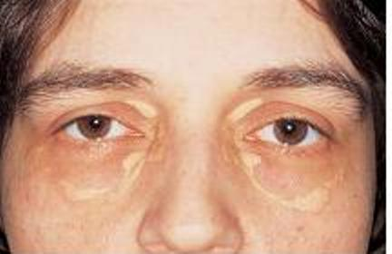

+ U vàng mí mắt
+ Là một bệnh lý thường xảy ra ở hai mắt, trên những người trung niên, người già hoặc những người có tăng lipid máu. Biểu hiện với những mảng dưới da, màu hơi vàng chứa cholesterol và lipid, ở phần trong của mí mắt.
+ Là một u lành tính, do đó về mặt thẩm mỹ, người ta thường cắt bỏ hoặc điều trị với argon laser hoặc carbon dioxide.


Hình: U mỡ vàng mí trên và dưới hai mắt